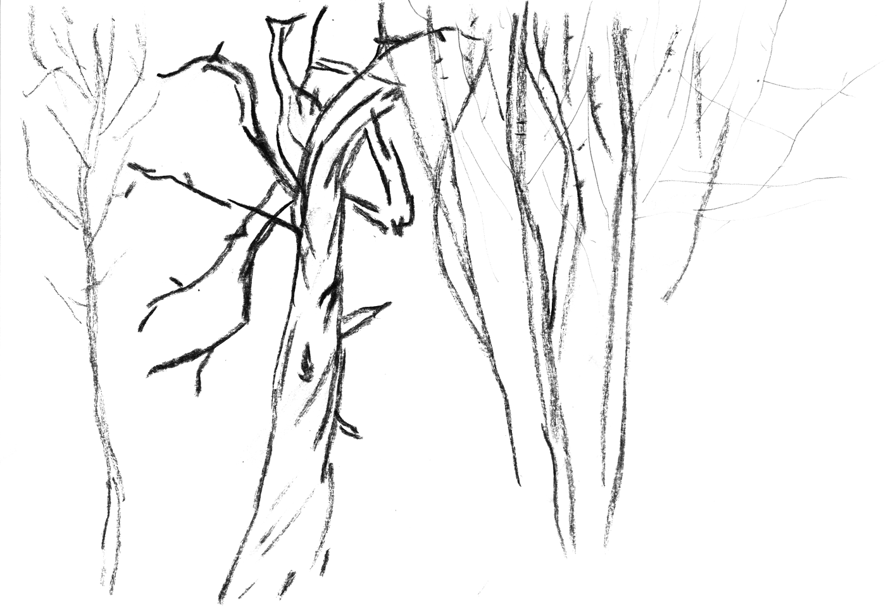

nature
luonnontilainen metsä
Aren't all forests natural? Human activities have been so widespread that there is probably very little strictly natural – primary forest – remaining on planet Earth. It has been estimated that 2,9% of the area of Finland is primary forest. Some of it is protected (most of it in Northern Finland), but not all.
The characteristics of a primary forest can be described, for example, through its structure, ecological processes and species. They can be very different depending on the location and other conditions: dense spruce forests or sparsely scattered forests on rocky coasts. Typically there are trees of different ages, species and sizes. Some species of animals, plants and fungus can only live in primary forests.
Although primary forests are so rare, there are near-natural forests that are very similar in their characteristics. They might not be as old, but have potential to become a natural forest with time. Mimicking the natural processes in forestry can be helpful to safeguard nature.
Sources:
Luontopaneeli report